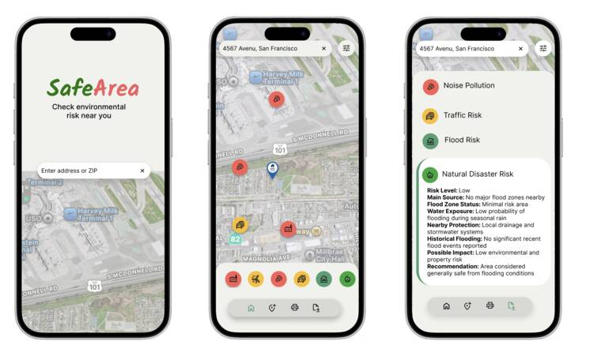
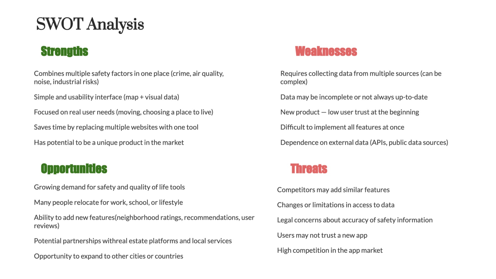
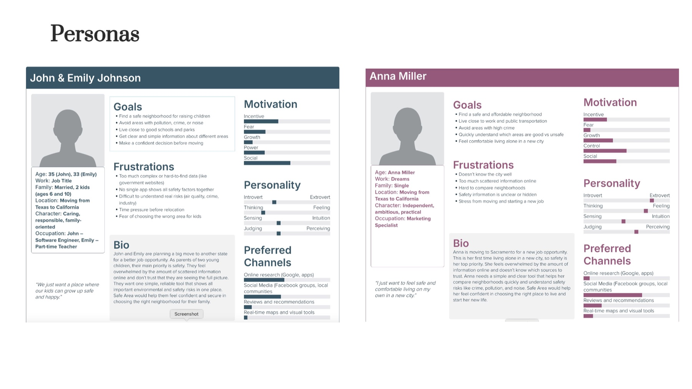
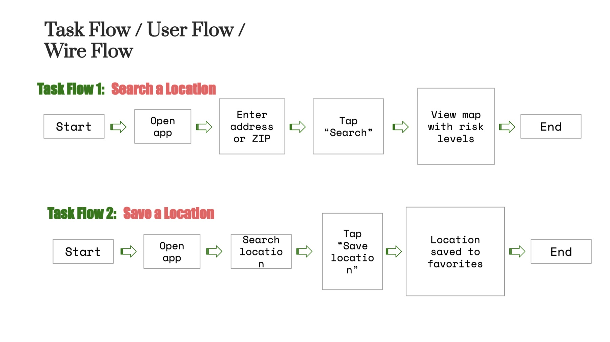
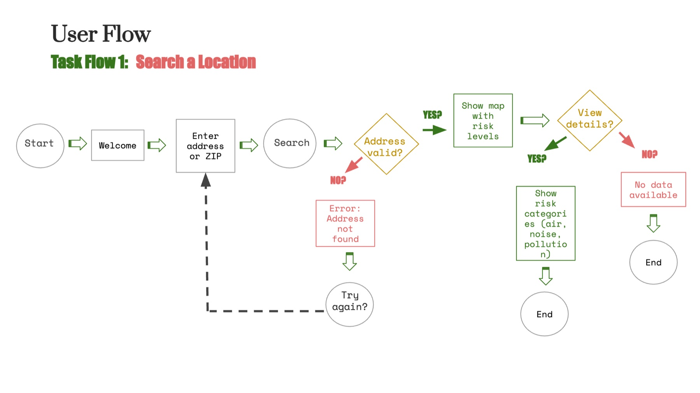
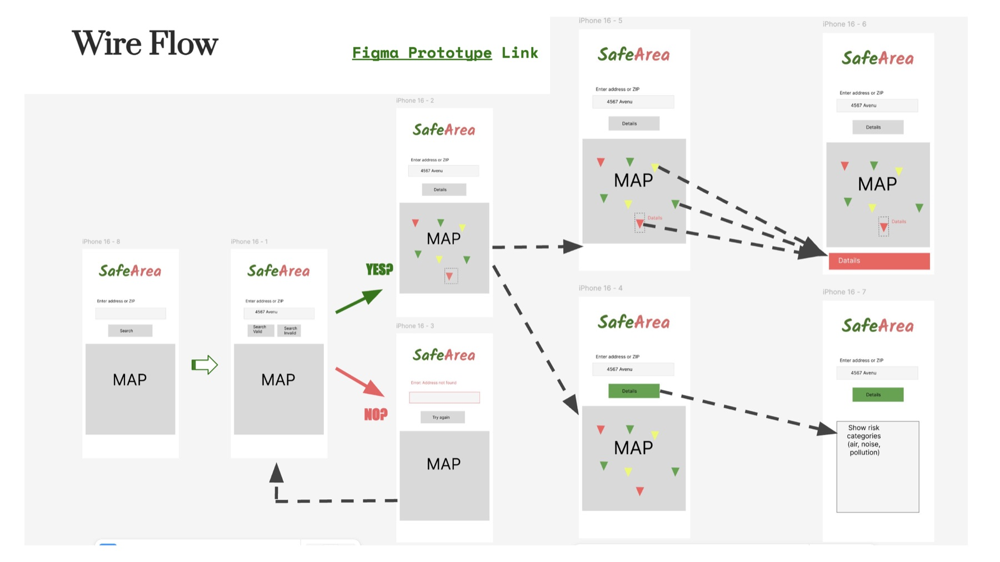
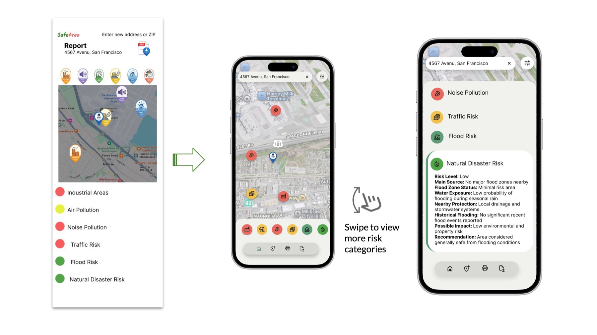
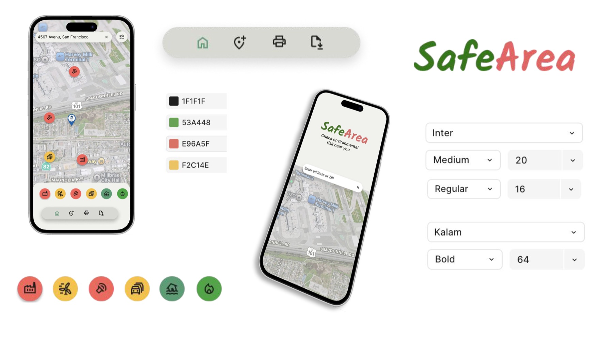

SafeArea App
A mobile app concept that shows environmental and safety risks near any address: noise, traffic, flooding, industrial pollution. I researched it, designed it in Figma, tested the prototype with five people and refined it from what they told me.

Safety information is scattered across many sites
People who relocate for work or school have to check crime maps, air quality sites and flood zones one by one, and it is hard to tell what the numbers mean. A SWOT analysis framed the opportunity: one simple tool that combines these risks on a map, with the clear challenges of data quality and building user trust.

Two people moving to California
To spend my time on research rather than layout, I used ready-made UX resources: the persona sheets are based on Xtensio’s free user persona template, and I filled every goal, frustration and motivation with my own findings.
John & Emily Johnson
A family with two children moving from Texas. They want a safe neighborhood near good schools and parks, and they don’t trust scattered information online. “We just want a place where our kids can grow up safe and happy.”
Anna Miller
Moving to Sacramento alone for a new job. She needs to compare neighborhoods quickly and understand which areas are safe. “I just want to feel safe and comfortable living on my own in a new city.”

Task flows, user flows, wire flow
I mapped four core tasks: search a location, save a location, view risk categories and filter by risk type. The user flows add the paths people really hit, like an address that isn’t found or an area with no data, so the prototype never leaves them stuck.



Five people, one prototype, real feedback
I tested the interactive Figma prototype on mobile phones with five participants (ages 18 to 42) on May 9 and 10, 2026. Each 10 to 15 minute session covered six tasks, from checking an area’s safety level to using filters and reading hazard details, followed by questions about what they liked and what confused them.
What worked
Participants found the app simple and visually clear. The colour-coded markers and the interactive map helped them spot safe and unsafe areas quickly.
What confused people
The swipe gesture wasn’t obvious. People didn’t realise they could drag the bottom sheet up with a finger to expand the risk details to full screen, then drag it back down to return to the map. They asked for a clearer cue that the panel can be swiped.
They also wanted text labels next to the risk icons, which weren’t clear on their own, and a short explanation of what each hazard means for them.
From a long report to a map-first app
I adjusted the prototype around that feedback. Every risk icon now has a text label next to it, so people don’t have to guess what it means. Each hazard opens a detailed card that explains it in plain words: the risk level, the main source, the possible impact and a recommendation. The risk categories sit in one row right above the navigation.
Try the refined prototype in Figma

Next iteration: make the bottom sheet obvious and accessible
Testing showed people didn’t discover the swipe. These are the changes planned for the next version of the prototype:
One-time swipe hint
On first launch, an animated hand and a short “Swipe up for details” hint appear on the bottom sheet, then disappear after the first swipe.
Visible drag handle
A grab bar at the top of the sheet, with its edge always peeking above the navigation, so the panel looks pullable even after the hint is gone.
Tap instead of drag
Tapping the handle, or a “Show details” / “Show map” button, opens and closes the sheet. Every drag has a single-tap alternative, as WCAG 2.2 (2.5.7 Dragging Movements) requires.
A calm palette for serious information
Green and coral carry the safe and risk meaning, always paired with an icon and a label so colour is never the only signal. Inter keeps the data readable; Kalam gives the logo a friendly, hand-drawn voice.
